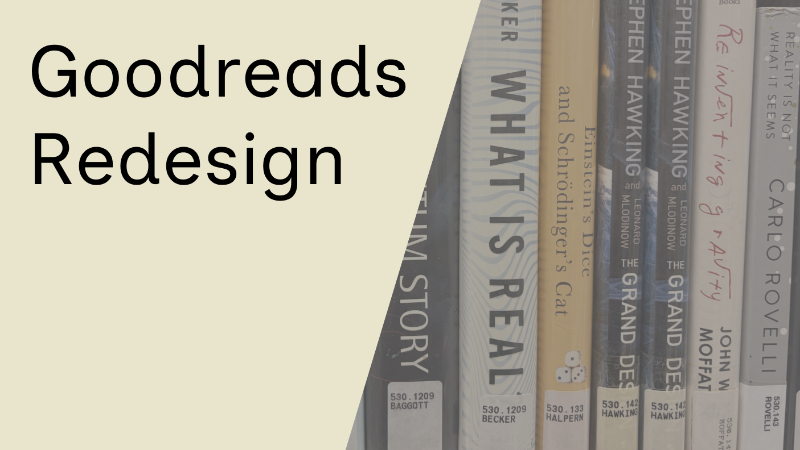
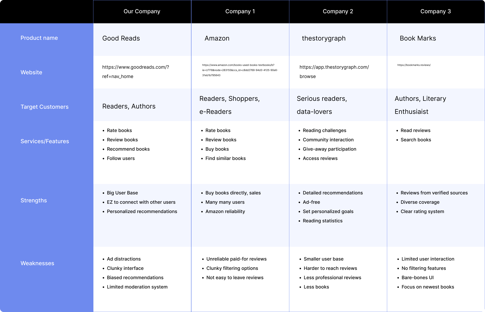
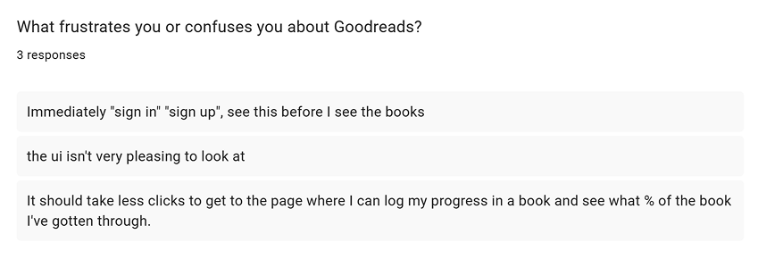
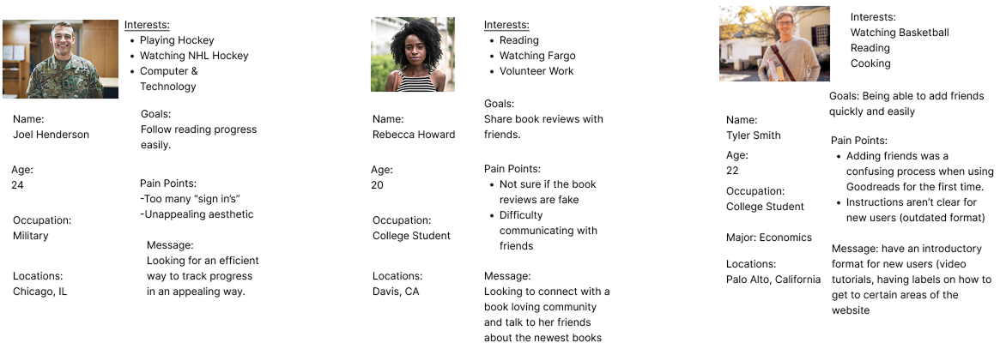
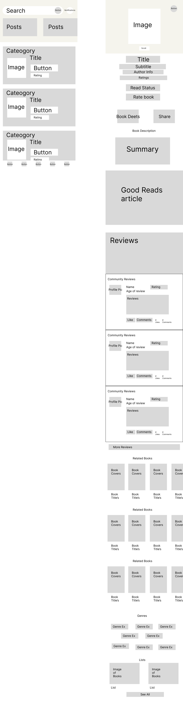
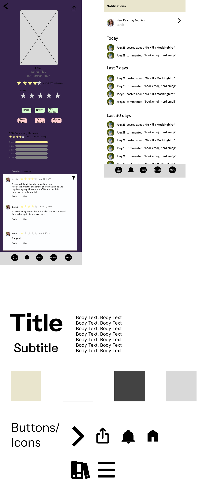
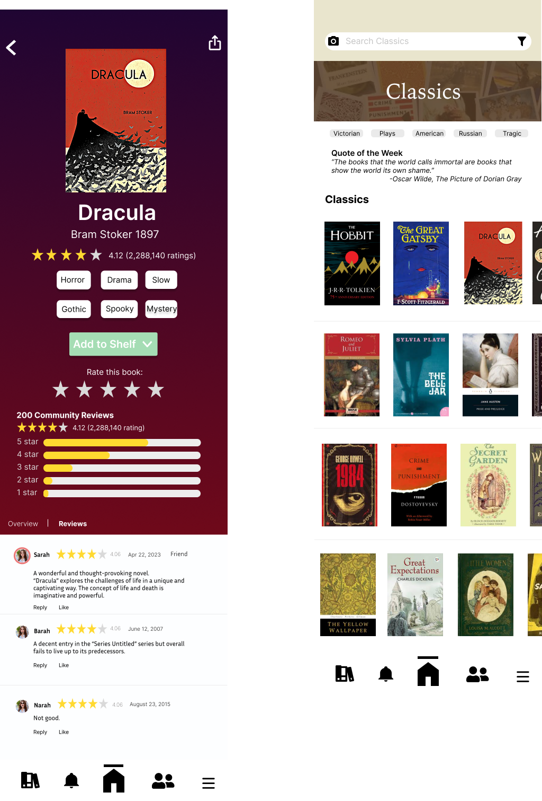
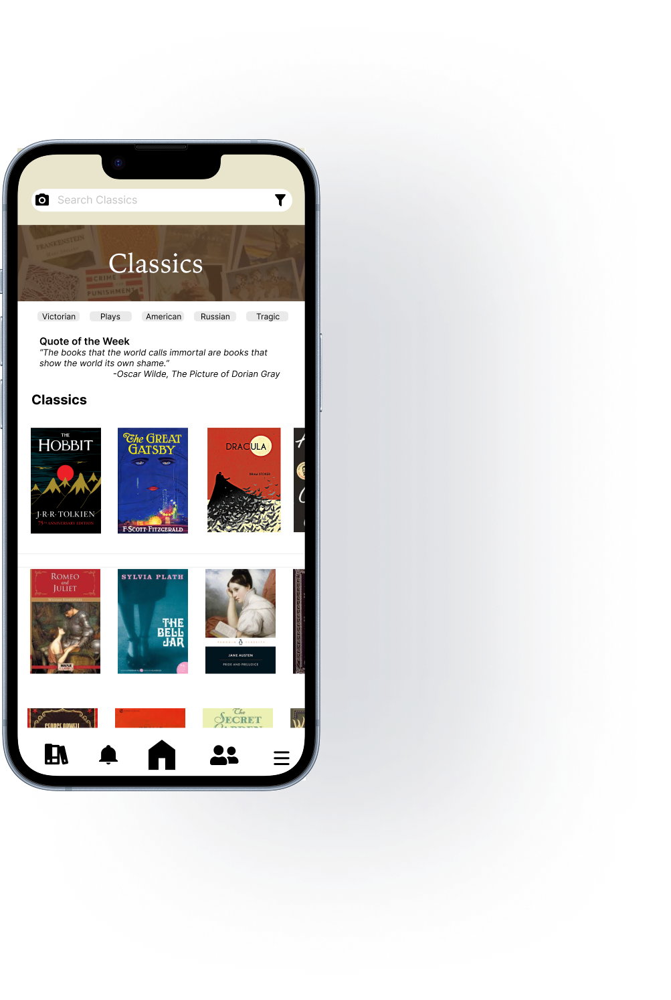

The Good Reads redesign was a project taken under Design Interactive’s fellowship program (a 8 week app redesign challenge made of teams of 3-4). This challenge was also the first time I was the most experienced member of my group and as such, I acted as both a team member, coordinator, and mentor to my other two teammates. Together, we were tasked with creating a better version of the Good Reads app.
The first phase of the project involved gathering data. I allocated tasks accordingly in order to gather information on the audience and app through surveys administered to friends and family, and a competitive analysis of similar services.


With this information, we were able to construct audience personas in order to put the specific issues we wanted to address in focus.

Our research was summarized as such “Good Reads more or less seems to be the industry standard in terms of book reviewing/recommending sites. Its acquisition under Amazon has improved its user base and selection size but also makes it less personalized and more susceptible to fake and botted reviews”
Using our research as a basis, we started working on our first prototype placing emphasis on creating a personalized cleaner feeling user experience. This prototype focused primarily on how elements would be laid out and how different pages would transition into each other. As the most experienced member of my group, I had to teach my teammates the basics of Figma.

The next iteration put more emphasis on color and finalizing icons, the scale of objects relative to others, and exploring new avenues for user interactions. A formal style guide was also established keeping fonts, colors, an symbols consistent across the design.

The last stage of the project built upon the structure established by the last iteration but with much more polish. This phase put more of an emphasis on scaling elements correctly for the phone viewing experience.


The fellowship program gave me the opportunity to expand my horizon as a graphic designer. It was my first time working on a project on the scale of several weeks and I learned both the advantages and disadvantages that came with having more time.
It also served as an effective lessons on the responsibility of being a leader. I had to make decisions that kept us on the deadline while mentoring my teammates through novel software and difficult design decisions.
View the final prototype
Back to Top